Map of observed daily average concentration of PM2.5 on August 22, 2015. We use three different maps of the same data. The first plot uses the base package, the second map uses the map function, and the third map uses the RgoogleMaps package.
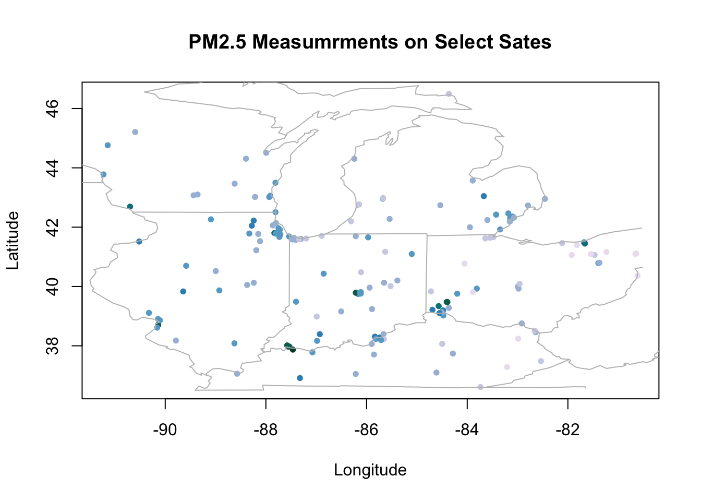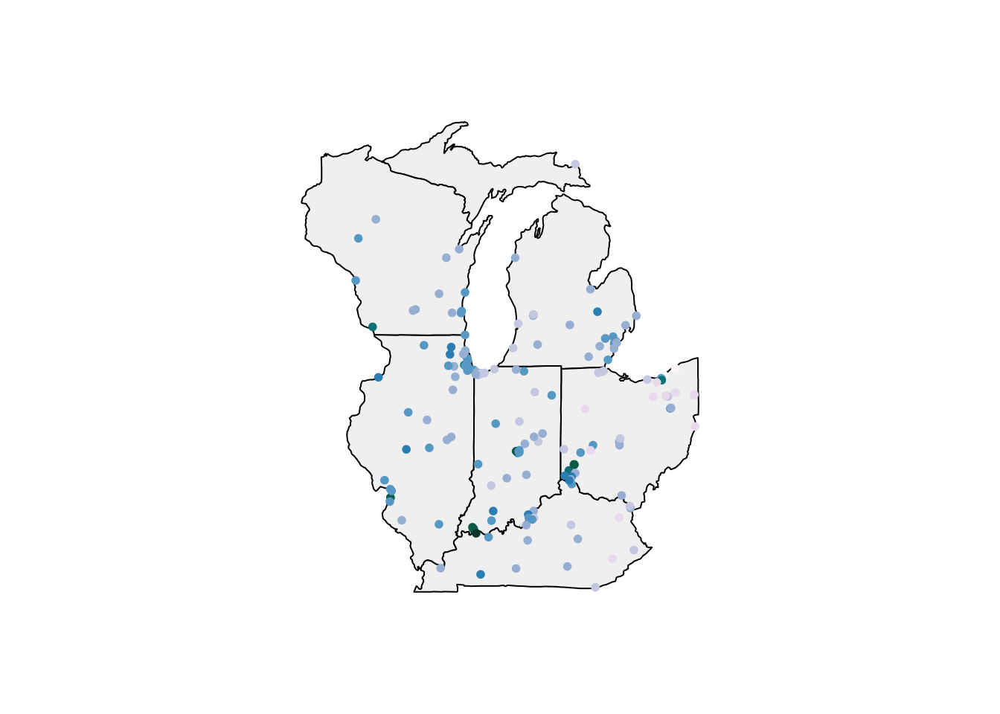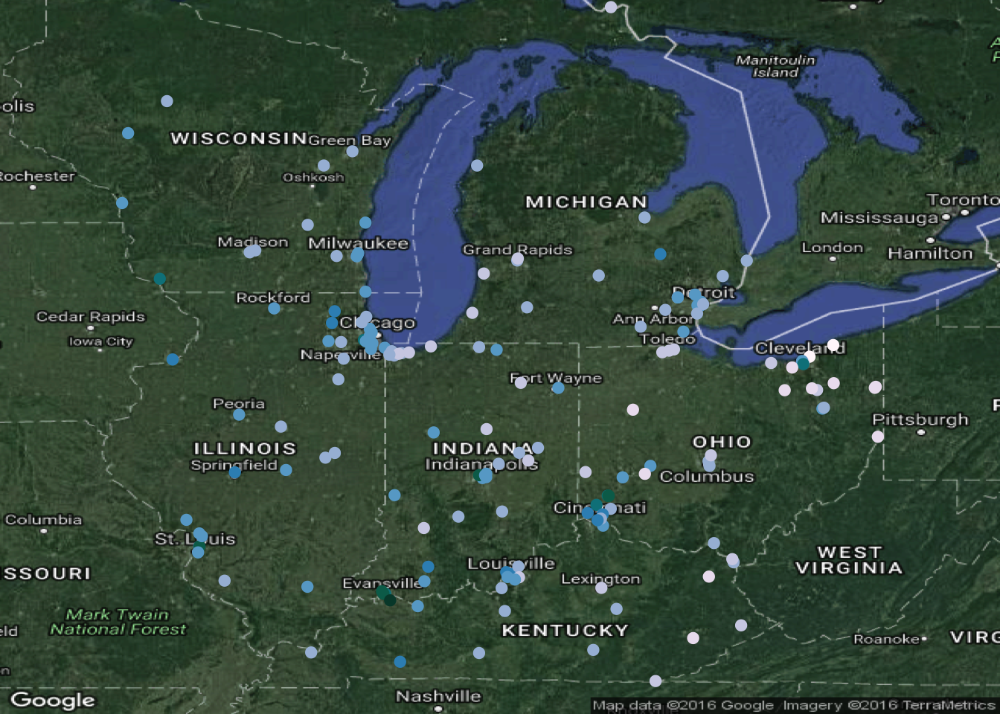
Next we plot the interpolated surface for the observed daily average concentration of PM2.5 and add contour lines to the plot. This plot gives us a ruff idea about how the PM2.5 concentrations vary spatially over our region of exploration.
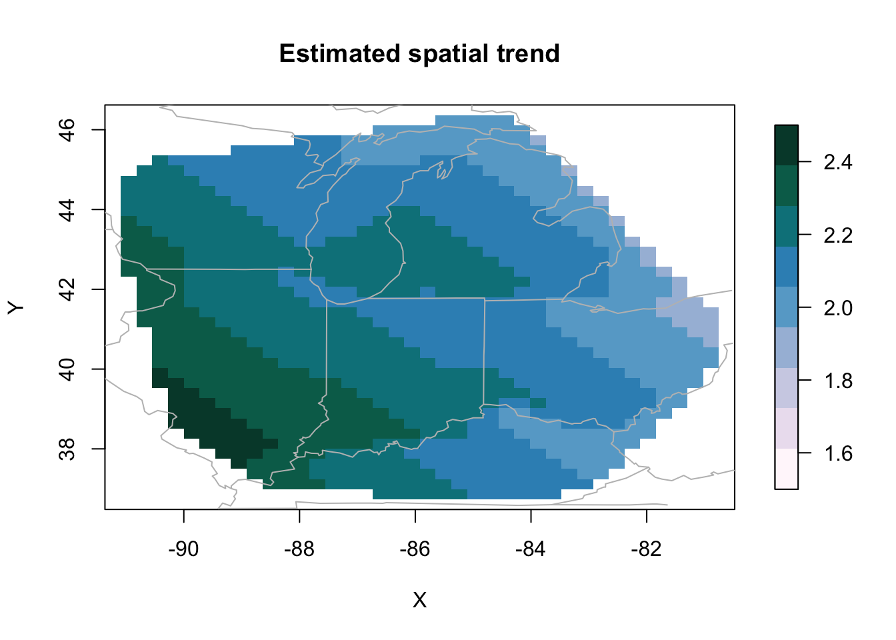
The first thing to look at is the summary of the observed PM2.5 concentrations. This gives us a feel for global distribution of observed values. Furthermore, we take a look at the boxplot which summarizes this information graphically and also highlights some extreme points. From the boxplot we see that there seem to be a number of somewhat extreme observed values.
summary(Obs_value)## Min. 1st Qu. Median Mean 3rd Qu. Max.
## 3.900 7.850 8.700 8.882 9.700 15.600boxplot(Obs_value)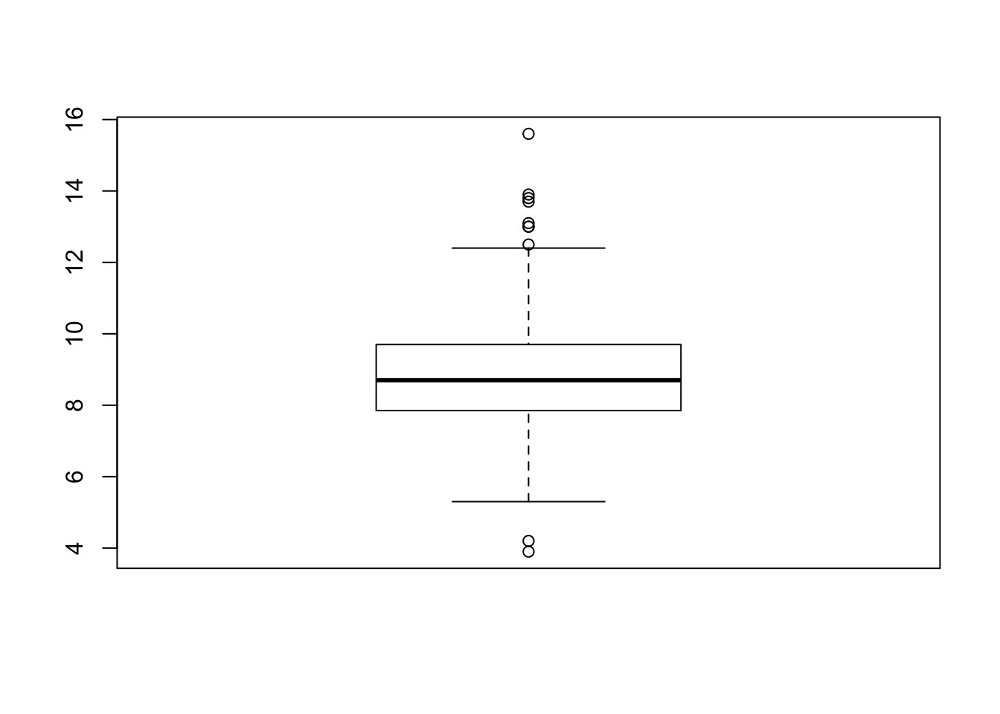
Next we look at the histograms and estimated densities of the PM2.5 concentrations by state. From the histogram we can see that the extreme values occur in Ohio and Kentucky for the most part, indicating that observations are more variable in these states. This observation is also consistent with the surface plot and the map plots.
qplot(log(Obs_value), fill = State)## `stat_bin()` using `bins = 30`. Pick better value with `binwidth`.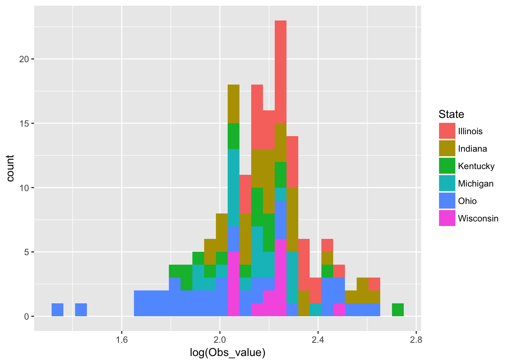
g <- ggplot(data, aes(log(Obs_value))) + geom_density(aes(group = State, fill = State), alpha = 0.4); g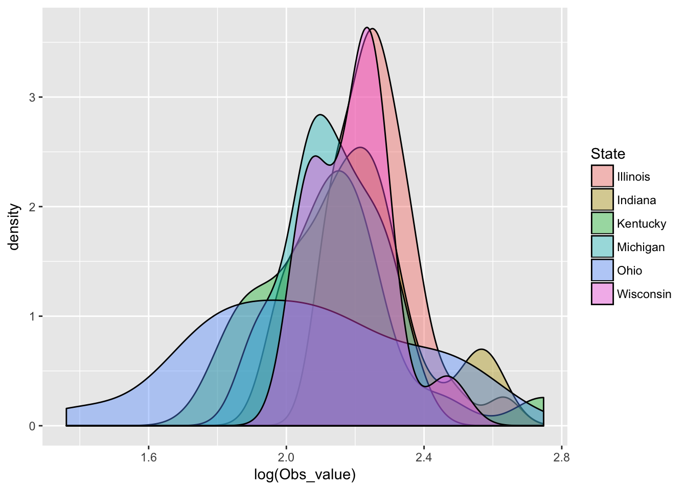
The density plots above show similar information, however it also suggests that there might be statistical difference in the mean observed values between some of the states. For example Michigan and Illinois have quite distinct peaks.
The next two boxplots look at how the means vary given other factors, type of location and type of land use at the location. From these plots these two factors seem not to vary with PM2.5 concentration.
qplot(Location_monitor_type, log(Obs_value), geom = "boxplot")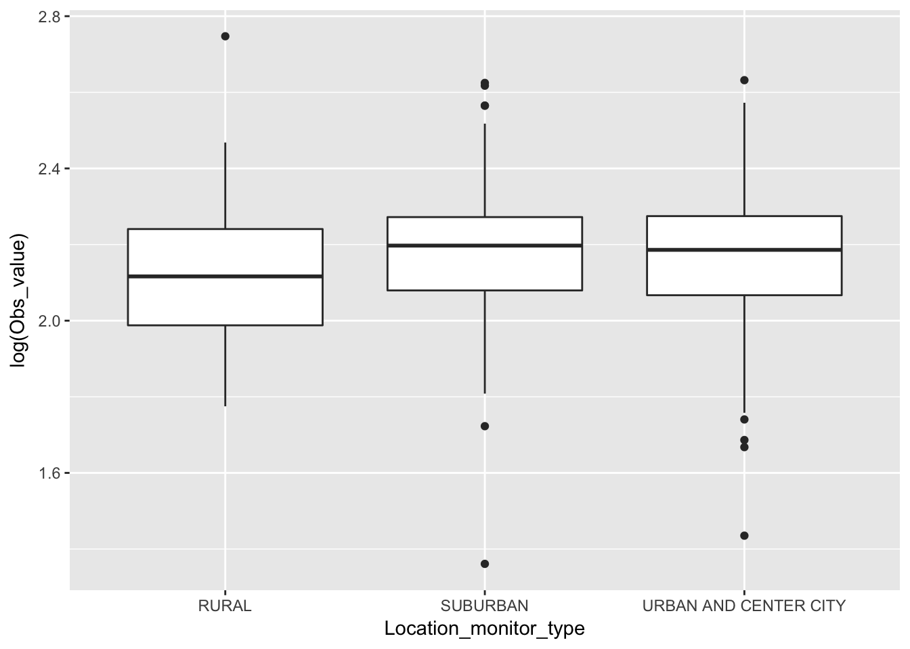
qplot(Land_use, log(Obs_value), geom = "boxplot")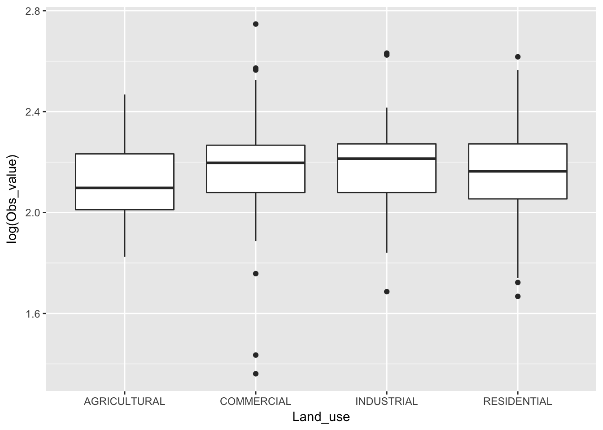
Looking at the correlation plot it seems that there is no obvious linear relationship between PM2.5 concentrations and any of the geographic data including the coordinates or elevation. However based on the maps and surface plot these seems to be spacial dependence.
plot(data[,c(2,3,4,8)])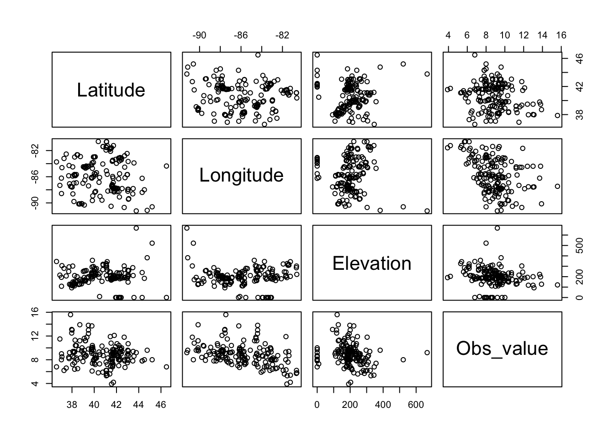
In the model for the global trend I include the Longitude, Latitude, as well as State as explanatory variables. The Motivation behind including the coordinates comes from the plotted maps and the surface image. It appears that higher concentrations of PM_2.5 are observed towards the south-west. The motivation for including States comes from the observation that the variation in the PM_2.5 due to elevations is captured by the State variable. Also it is plausible that state regulations or standards vary, and possibly impact the global trend of observed PM_2.5 concentrations.
We do quick variable selections by adding additional variables, but none seem to provide significant information about the variation in the response, thus we use a model with just the coordinates and State.
anova(lm(log(Obs_value) ~ x + y + State), lm(log(Obs_value) ~ x + y + State + Elevation), lm(log(Obs_value) ~ x + y + State + Elevation + Land_use), lm(log(Obs_value) ~ x + y + State + Elevation + Land_use + Location_monitor_type))## Analysis of Variance Table
##
## Model 1: log(Obs_value) ~ x + y + State
## Model 2: log(Obs_value) ~ x + y + State + Elevation
## Model 3: log(Obs_value) ~ x + y + State + Elevation + Land_use
## Model 4: log(Obs_value) ~ x + y + State + Elevation + Land_use + Location_monitor_type
## Res.Df RSS Df Sum of Sq F Pr(>F)
## 1 155 4.9501
## 2 154 4.8640 1 0.086096 2.6953 0.1028
## 3 151 4.8157 3 0.048318 0.5042 0.6800
## 4 149 4.7596 2 0.056119 0.8784 0.4176model <- lm(log(Obs_value) ~ x + y + State)
summary(model)##
## Call:
## lm(formula = log(Obs_value) ~ x + y + State)
##
## Residuals:
## Min 1Q Median 3Q Max
## -0.56613 -0.12247 -0.00381 0.10799 0.53923
##
## Coefficients:
## Estimate Std. Error t value Pr(>|t|)
## (Intercept) 0.06619 1.33789 0.049 0.96060
## x -0.04962 0.01219 -4.071 7.43e-05 ***
## y -0.05416 0.01342 -4.034 8.58e-05 ***
## StateIndiana 0.02363 0.05401 0.438 0.66227
## StateKentucky -0.12103 0.08424 -1.437 0.15280
## StateMichigan 0.21233 0.07433 2.857 0.00487 **
## StateOhio 0.06333 0.08468 0.748 0.45568
## StateWisconsin 0.06743 0.06802 0.991 0.32308
## ---
## Signif. codes: 0 '***' 0.001 '**' 0.01 '*' 0.05 '.' 0.1 ' ' 1
##
## Residual standard error: 0.1787 on 155 degrees of freedom
## Multiple R-squared: 0.3277, Adjusted R-squared: 0.2973
## F-statistic: 10.79 on 7 and 155 DF, p-value: 4.798e-11From the estimated parameters it appears that increasing x or y i.e. moving in the direction of north-east is associated with lower values of PM_2.5. Also, it appears that the difference in the mean observed concentration between Michigan and Illinois is statistically significant. Overall the model for the global trend explains about 30% of the variation in the observed PM_2.5 variation. Thus there is a motivation to model the small scale variation too.
Having modeled the global trend we proceed to modeling the small scale variation. For this analysis we produce the empirical variaogram and then fit parametric variaograms models. We then choose the model that fits best based on the weighted sum of squares criteria.
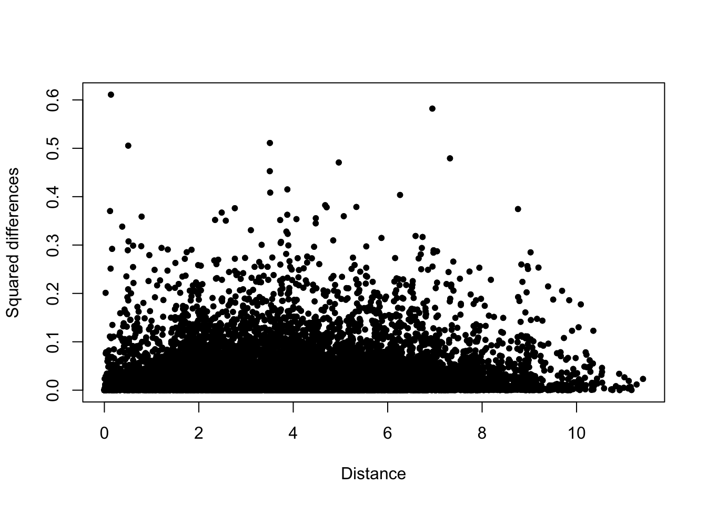 Above is the plot of the variogram cloud. The cloud reflects that at close distances the the variation in PM2.5 concentrations is small, and as we begin to move away the variation increases. The cloud however dips down after a certain distance. This is not a problem because this analysis focuses on the small scale variation, while the variation at larger distances is modeled by the global trend. For this reason we produce an empirical variogram which groups the concentration variations into unequal bins that increase in size and hence weigh small scale variation higher.
Below is the result of an empirical variogram that uses 10 bins. From the plot we can see that the variance or semi-variance increases and levels out pretty quickly and begin to fluctuate somewhat.
bins <- (0.1)*((1:10)^1.8)
dt <- data.frame(cbind(x,y,(model$residuals)))
empirical_variogram <- variogram(model$residuals ~ 1 ,locations = ~ x + y ,dt, boundaries = bins)
plot(empirical_variogram,col="black",type="p",pch=20)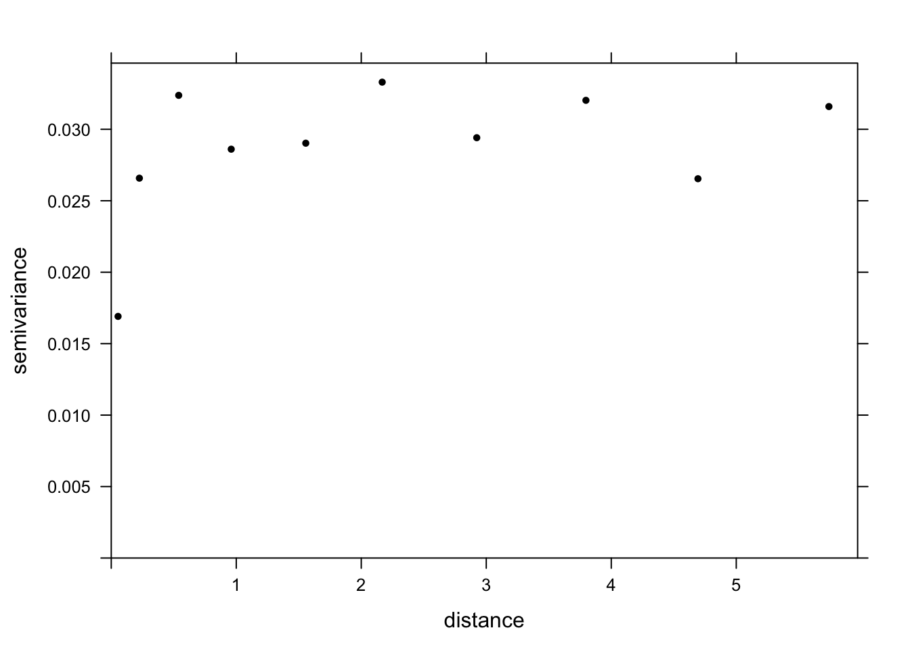
We furthermore explore whether the spacial process that we are modeling is isotropic or anisotropic. If the process is isotropic the semi-variance is a function of only the distance, and is independent of direction of movement away from a point. To answer the question we produce a directional semivariogram where we use the same method to produce a variogram, only fix a vector/degree along which differences are computed.
Looking at the directional variogram below it becomes evident the the process is in fact anisotropic. Along the movement at 90 degrees we get a desirable variogram, while looking at 0,45, and 135 degrees produces undesirable behavior that looks more normal random.
directional_empirical_variogram <- variogram(model$residuals ~ 1,locations = ~ x + y ,dt, alpha=c(0,45,90,135),boundaries = bins)
plot(directional_empirical_variogram)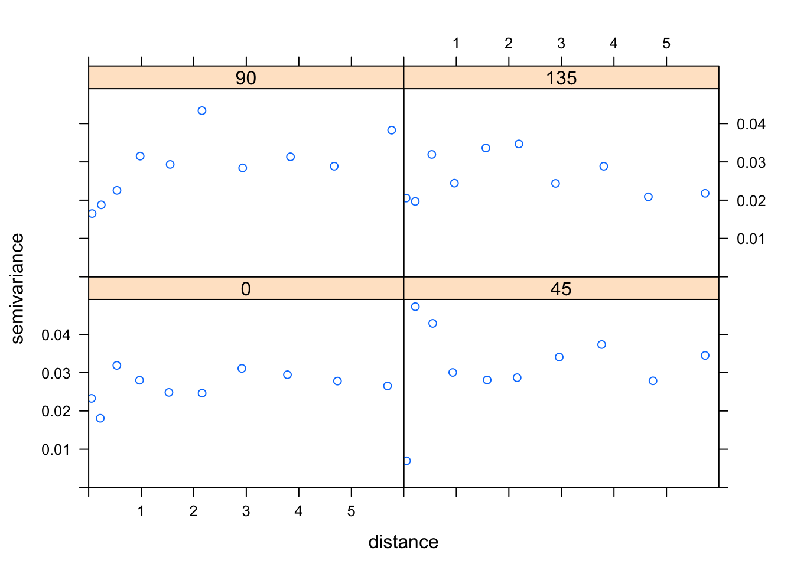
Despite having an anisotropic process we proceed to fitting parametric variogram models and assessing their goodness of fit via weighted sum of squares.
Below are the plots of the fitted Exponential, Spherical, Gaussian, and Matern models. All appear quite similar, with the main differences in behavior along distances below 1.
exp_veriogram_model <- fit.variogram(empirical_variogram,vgm(psill=0.03,"Exp",1,0.01),fit.method=2)
print(plot(empirical_variogram,exp_veriogram_model))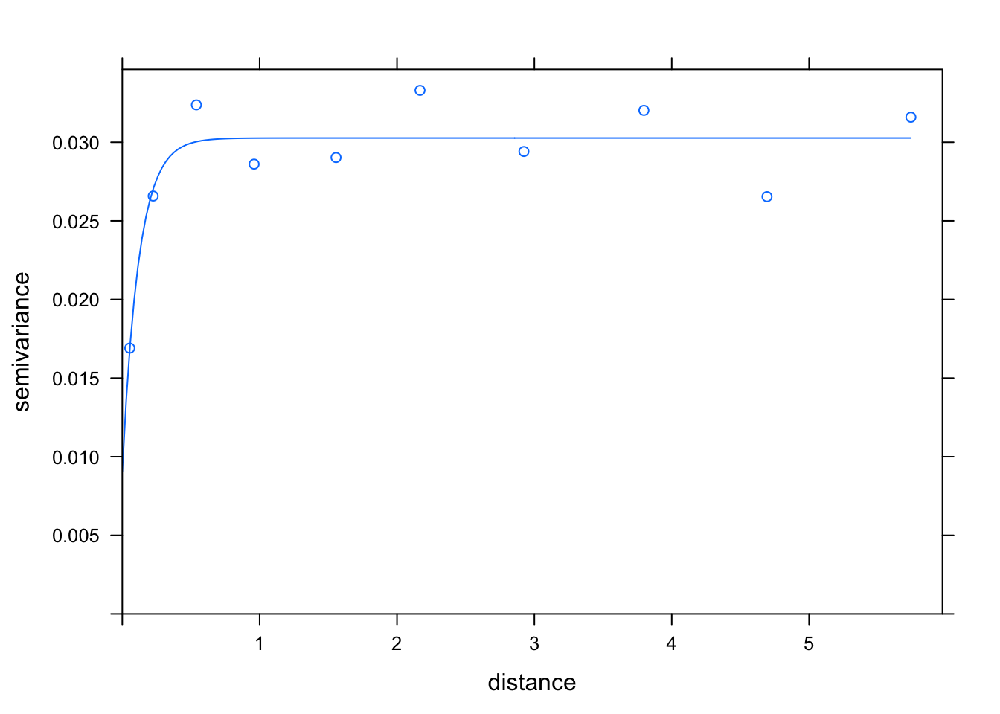
sph_veriogram_model <- fit.variogram(empirical_variogram,vgm(psill=0.03,"Sph",1,0.01),fit.method=2)
print(plot(empirical_variogram,sph_veriogram_model))gau_veriogram_model <- fit.variogram(empirical_variogram,vgm(psill=0.03,"Gau",1,0.01),fit.method=2)
print(plot(empirical_variogram,gau_veriogram_model))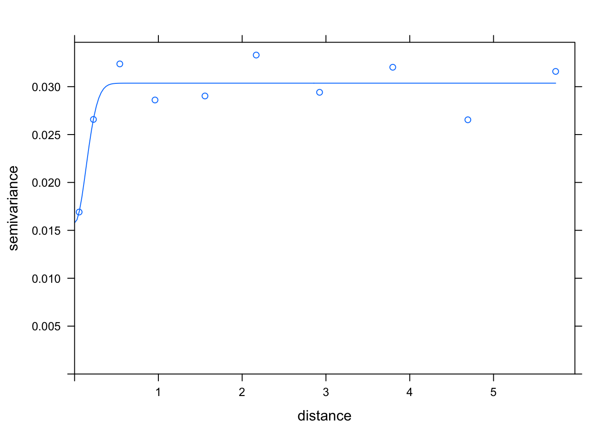
mat_veriogram_model <- fit.variogram(empirical_variogram,vgm(psill=0.03,"Mat",1,0.01, kappa = 1),fit.method=2)
print(plot(empirical_variogram,mat_veriogram_model))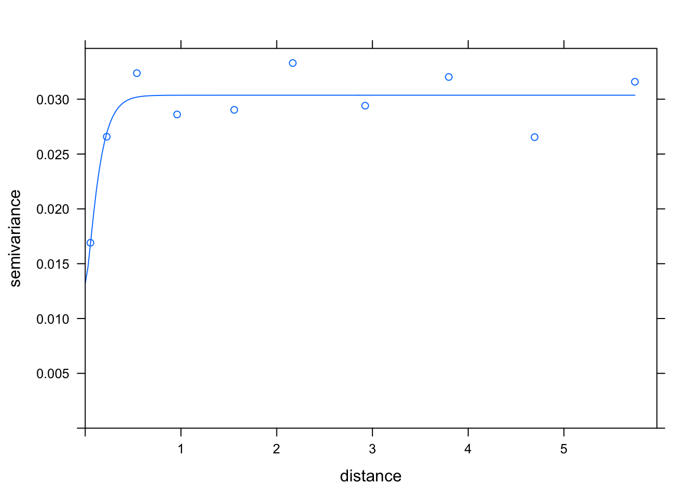
The estimated parameters for all of the fitted models are summarized in the table below.
## Exp Sph Gau Mat
## sigam2 0.021207259 0.01693255 0.01457655 0.01716128
## phi 0.119663861 0.37965702 0.19320262 0.09375150
## tau2 0.009060086 0.01329105 0.01578716 0.01320271
## nugget 0.000000000 0.00000000 0.00000000 0.00000000Having fitted the models we compute the weighted sums of squared differences to assess the goodness of fit. The table below summarizes the computations. Based on this criteria only we would select the Exponential variogram model.
wss_results_table## WSS Ratio
## Exponential 0.00003862 1.000
## Spherical 0.00003747 1.031
## Gaussian 0.00003735 1.034
## Matern 0.00162149 0.024Now we repeat the same analysis, using the same model for the global fit, except we use the Restricted Maximum Likelihood criteria for estimation of the parameters, and we use the Akaike and Bayesian Information criteria as tools for model selection.
The parameter estimates and IC’s are all presented in the table of results below. Based on the REML analysis, and both the AIC and BIC we would select the Matern model for the variogram, over the Exponential as suggested by the OLS driven analysis in previously.
results## status Exp Sph Gau
## beta0 estimated 2.2943 2.3096 2.3266
## beta1 estimated -3e-04 -3e-04 -3e-04
## beta2 estimated -0.077 -0.0672 -0.0738
## beta3 estimated -0.1737 -0.1646 -0.1757
## beta4 estimated -0.1721 -0.1925 -0.2049
## beta5 estimated -0.2416 -0.2538 -0.2461
## beta6 estimated -0.0118 -0.0256 -0.0271
## tausq estimated 0.0161 0.0173 0.022
## sigmasq estimated 0.0243 0.0213 0.0169
## phi estimated 0.8073 1.5121 0.8984
## kappa fixed 0.5 0.5 0.5
## AIC computed -90.2610612733279 -87.5978790015728 -84.2284491640448
## BIC computed -59.3235592652603 -56.6603769935052 -53.2909471559772
## Mat
## beta0 2.3088
## beta1 -3e-04
## beta2 -0.0759
## beta3 -0.1742
## beta4 -0.1859
## beta5 -0.245
## beta6 -0.0178
## tausq 0.0193
## sigmasq 0.0201
## phi 0.5117
## kappa 1
## AIC -87.3538916453843
## BIC -56.4163896373167